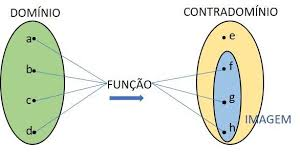

Funções
Para que serve as funções?
As Funções servem para nos auxiliar a resolver problemas em que há muitas possibilidades. Elas nos apontam quais são os limites aceitáveis dentre as opções e também servem para formar previsões e estimar o resultado de um fenômeno.
Existe várias funções ou só uma?
Existe muitas funções matemáticas, aqui estão umas delas
- Função ímpar.
- Função crescente.
- Função decrescente.
- Função constante.
- Função afim.
- Função quadrática.
- Função modular.
- E muito mais, entre neste site para ver as outras funções 
Porém para a sua saúde, apenas iremos usar neste site. Função afim :D
Função Afim
Pela definição de função afim, temos que ela é determinada pela seguinte expressão f(x)=ax+b, ou seja, para determinar tal função, basta encontrarmos os coeficientes a, b. Veremos que para descobrir estes coeficientes precisamos apenas de dois pontos e o valor da função nesses pontos. Veja mais detalhado aqui.
Exemplo:
Em uma determinada cidade, a tarifa cobrada pelos taxistas corresponde
a uma parcela fixa chamada de bandeirada e uma parcela referente aos
quilômetros rodados. Sabendo que uma pessoa pretende fazer uma viagem de
7 km em que o preço da bandeirada é igual a R$ 4,50 e o custo por
quilômetro rodado é igual a R$ 2,75, determine:
a) uma fórmula que expresse o valor da tarifa cobrada em função dos quilômetros rodados para essa cidade.
b) quanto irá pagar a pessoa referida no enunciado.
Como faz?
a) De acordo com os dados, temos que b = 4,5, pois a bandeirada não depende da quantidade de quilômetros percorridos.
Cada quilômetro rodado deverá ser multiplicado por 2,75. Sendo assim, esse valor será igual a taxa de variação, ou seja, a = 2,75.
Considerando p (x) o preço da tarifa, podemos escrever a seguinte fórmula para expressar esse valor:
p (x) = 2,75 x + 4,5
b) Agora que já definimos a função, para calcular o valor da tarifa basta substituir 7 km no lugar do x.
p (7) = 2,75 . 7 + 4,5 = 19,25 + 4,5 = 23,75
Portanto, a pessoa deverá pagar R$ 23,75 por uma viagem de 7 km.